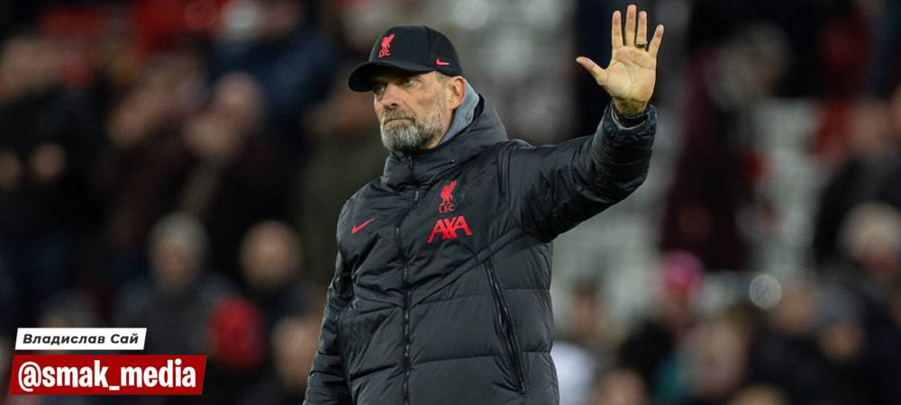

⚡️У Німеччині затримали українського пенсіонера, який перевозив свою
щомісячну пенсію
Чоловіка було зупинено в аеропорту Мюнхена з незадекларованими 455
тисячами євро. Порушником виявився вчитель фізкультури, Микола
Іванович Ярошенко, звичайний пенсіонер з Вінниці, який повертався з
УкрПошти, після отримання своєї щомісячної пенсії. «Боже, скільки ще
ці європейські жлоби будуть дивуватись нашому рівню життя. Минулого
разу так само затримали, коли собі бугаті широн з салону за готівку
брав», - роздратовано коментує Микола Іванович.
⚡️Легендарний тренер Юрген Клопп залишить Ліверпуль, та тренуватиме
тернопільську ФК «Нива»
Зі слів Клоппа, український клуб запропонував йому гонорар у вигляді
однушки біля озера в центрі Тернополя, зп 12 тисяч гривень, без
урахування податків, щорічну оплачувану тижневу відпустку у Коблево, а
також бронювання від мобілізації.

⚡️Ігнат пояснив чому ще не надали F-16
«В сенсі чому? У нас досі немає жодної пісні про F-16. Коли всі
співали про Байрактар - Байрактри були, варто було про них забути і
вони одразу зникли з полю бою. З Псом Патроном і джавелінами те саме.
Поки не почнем співати - нічого не буде», - заявив Ігнат, критикуючи
українців